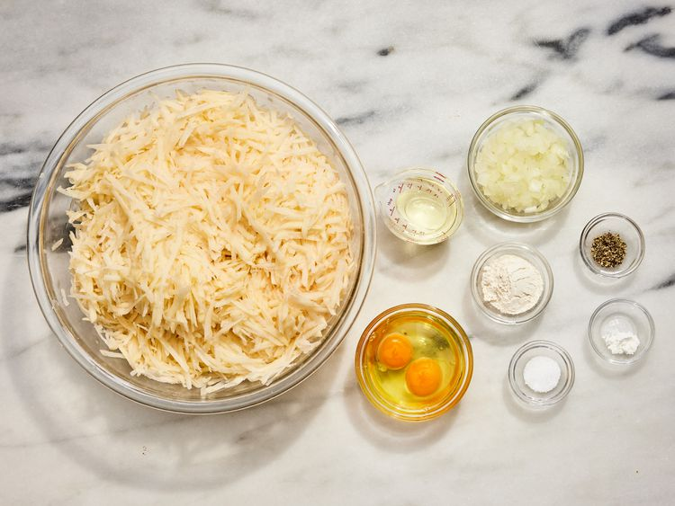
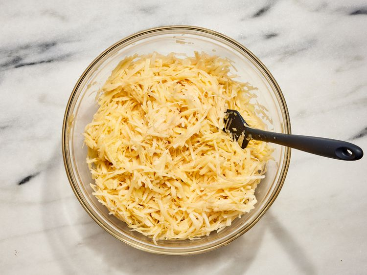
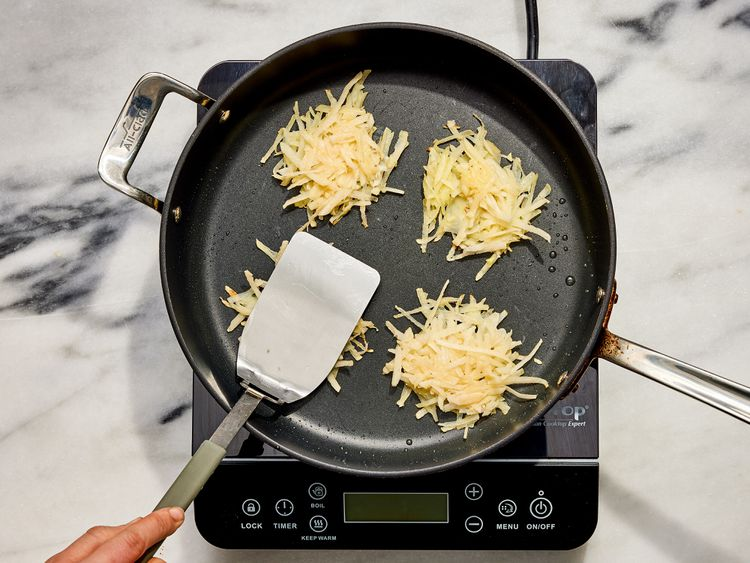
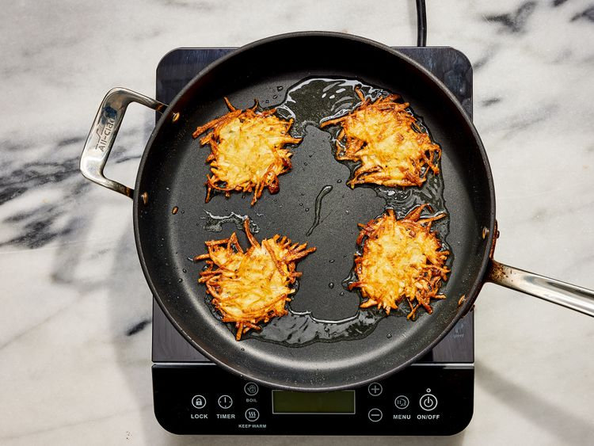
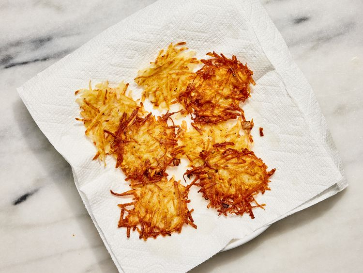
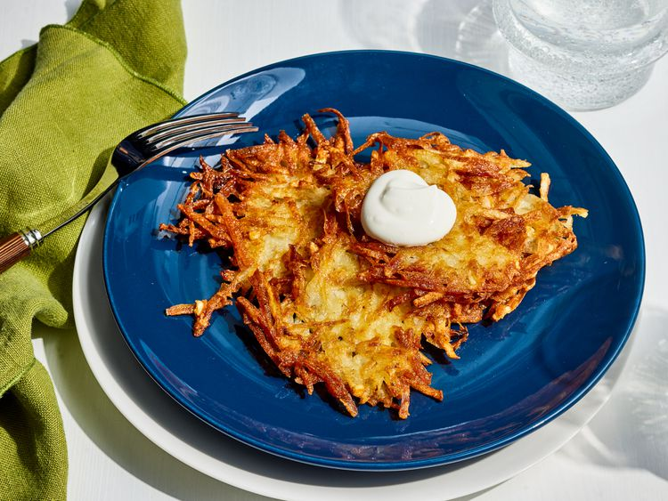

These German potato pancakes are a nice change from regular pancakes. They make a great dinner meal when served with Bratwurst sausage. I spread mine with cranberry sauce and top with maple syrup.
Ingredients
- 2 large eggs
- 2 tablespoons all-purpose flour
- ¼ teaspoon baking powder
- ½ teaspoon salt
- ¼ teaspoon pepper
- 6 medium potatoes, peeled and shredded
- ½ cup finely chopped onion
- ¼ cup vegetable oil
Directions
-
Gather all ingredients.

-
Beat eggs, flour, baking powder, salt, and pepper together in a large bowl; stir in potatoes and onion.

-
Heat oil in a large skillet over medium heat. Drop heaping tablespoonfuls of potato mixture into hot oil in batches. Press to flatten.

-
Cook until browned and crisp, about 3 minutes on each side.

-
Transfer to a paper towel-lined plate to drain.

-
Repeat with remaining potato mixture. Enjoy!

Recipe Reference
https://www.allrecipes.com/recipe/33118/german-potato-pancakes/Back to Recipes